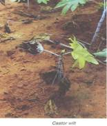
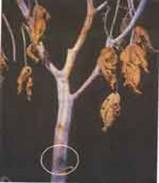

| Home |
| CASTOR |
mAJOR DISEASES |
| 1. Seedling blight |
| 2. Rust |
| 3. Leaf blight |
| 4. Brown leaf spot |
| 5. Powdery mildew |
| 6. Stem rot |
| 7. Bacterial leaf spot |
| 8. Wilt |
| Questions |
| Download Notes |
CASTOR :: MAJOR DISEASE :: WILT
Wilt - Fusarium oxysporum
Symptoms
When seedlings are attacked cotyledonary leaves turn to dull green colour, wither and die subsequently. Leaves are droop and drop off leaving behind only top leaves. Diseased plants are sickly in appearance. Wilting of plants, root degeneration, collar rot, drooping of leaves and necrosis of affected tissue and finally leading to death of plants. Necrosis of leaves starts from margins spreading to interveinal areas and finally to the whole leaf. Spilt open stem shows brownish discolouration and white cottony growth of mycelia much prominently in the pith of the stem.
|  |  |
Symptoms |
|
Management
- Selection of disease free seeds.
- Grow tolerant and resistant varieties like Jyothi, Jwala, GCH-4 DCH-30 and SHB 145.
- Avoid water logging
- Burning of crop debris
- Green manuring and intercropping with red gram
- Treat the seeds with thiram @ 2g/ kg or carbendiazim @ 2g/ kg seed.
- Seed treatment with 4g of Trichoderma viridetalcformulation.
- Multiplication of 2kg of T.viride formulation by mixing in 50kg farm yard manure
- Sprinkling water and covering with polythene sheet for 15days and then applying between rows of the crops is helpful in reducing the incidence.